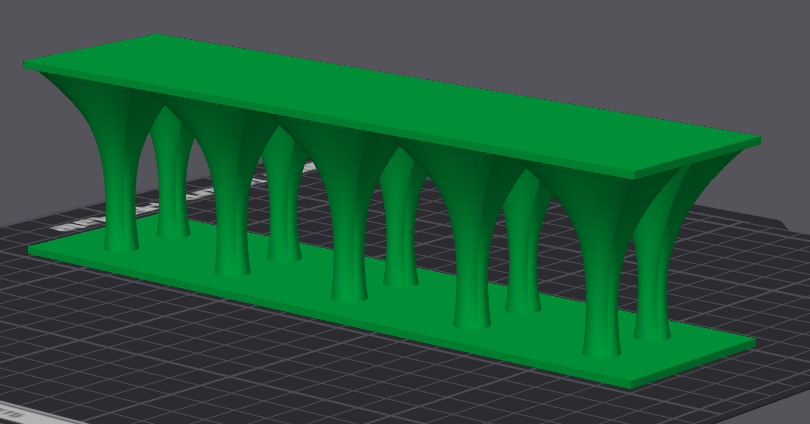

Journal Week 27
Table of Contents
Referencias
2026-06-29
[10:30]
Estamos con la rampa para el setup. Ya imprimieron el tornillo M6 y, si bien la tuerca tiene un poco de juego, quedó bastante bien. El tornillo impreso enrosca perfecto en una rosca de metal, y viceversa. Así que vamos a seguir adelante con esta idea.
Por otro lado la rampa estuve probando ponerle columnas con un loft para que pueda imprimirse la parte de arriba sin soporte.

La pieza sólida tiene un volumen de 500 cm³ mientras que con esas columnas tiene 128.776 cm³, con lo cual es un tercio. Además el tiempo de impresión pasa a ser de solo dos horas vs las más de ocho que tarda sólido. Así, la pieza está llena de agua y contrarresta los efectos del empuje.
[14:54]
Va a ser todo modular. Tenemos una pieza que es el fondo de la caja y otra que son las paredes, y el plexiglás en el medio. Además a la pared externa se le puede incorporar una base donde apoyar la pesa. Todo lleva tornillos de M6x16 excepto las secciones más chicas de la rampa donde debería ir o de 10 o 12 mm de largo.
[16:56]
Ya hice también la rampa con relación de aspecto 1/35.